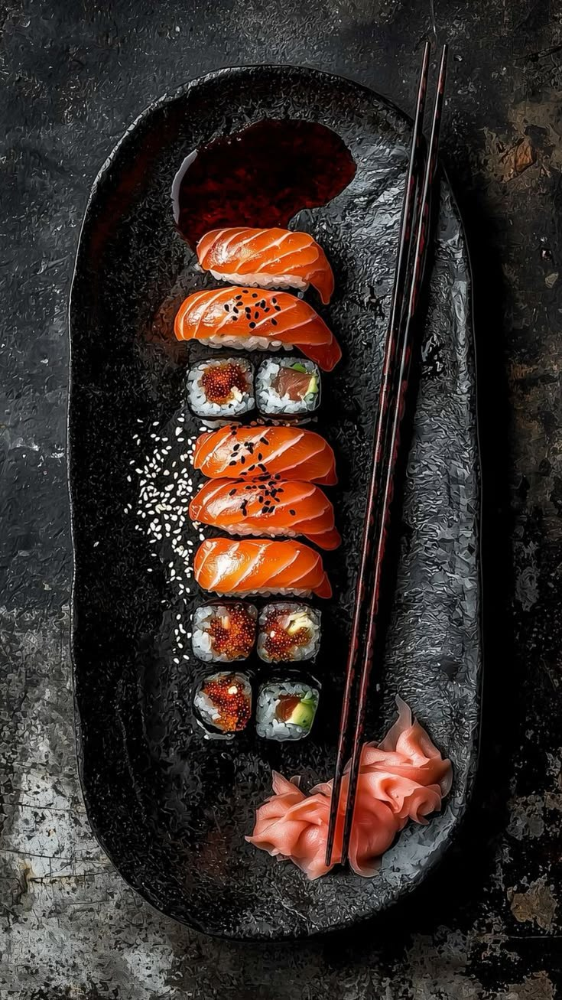
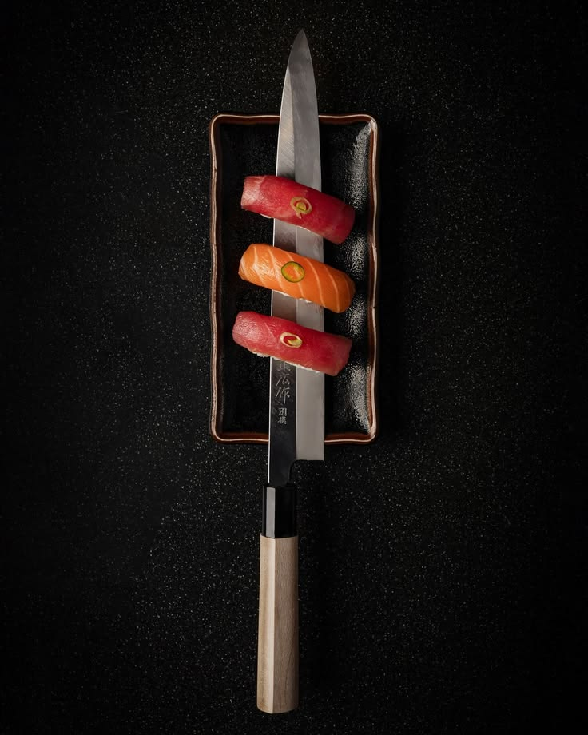
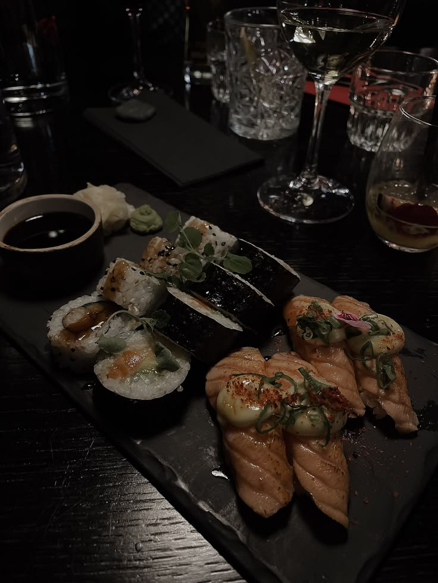
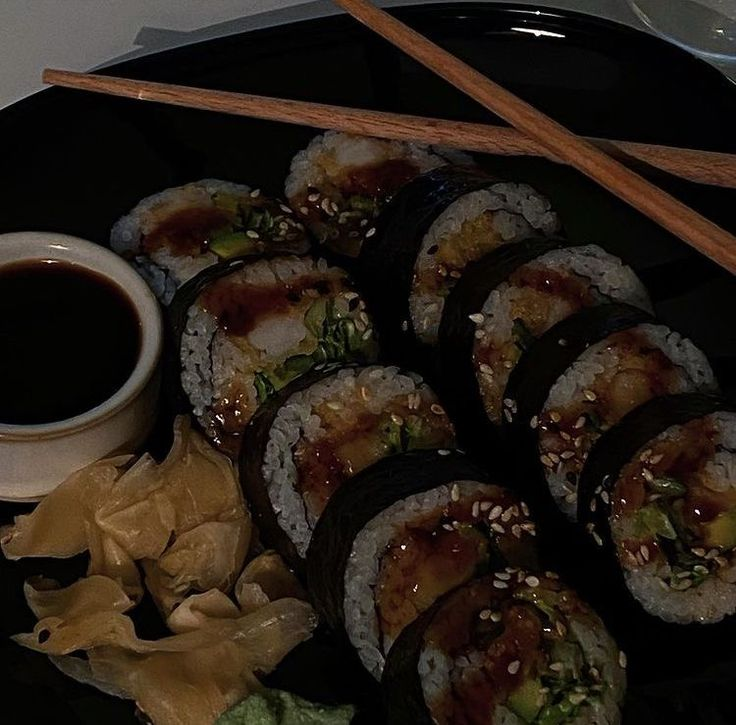
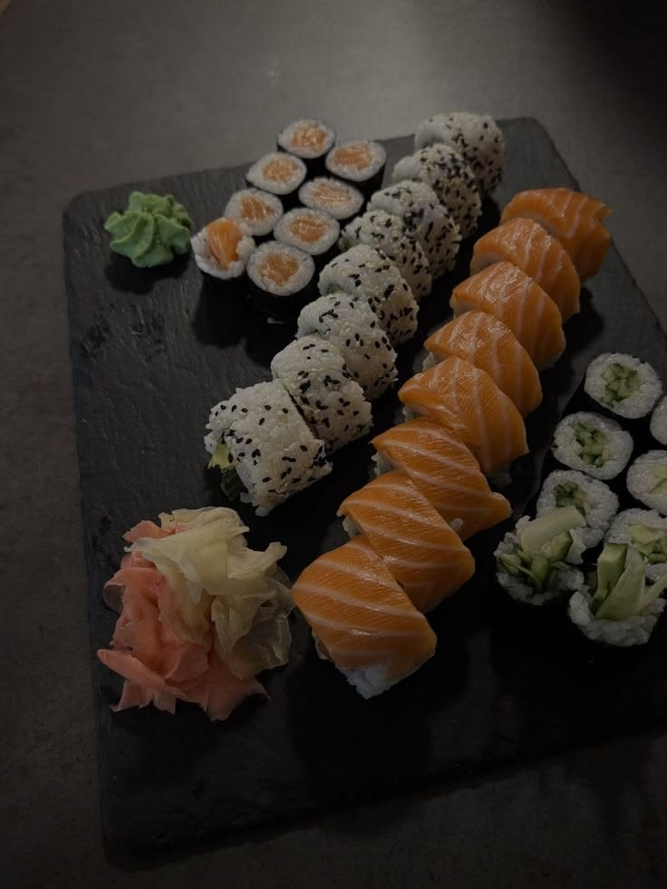
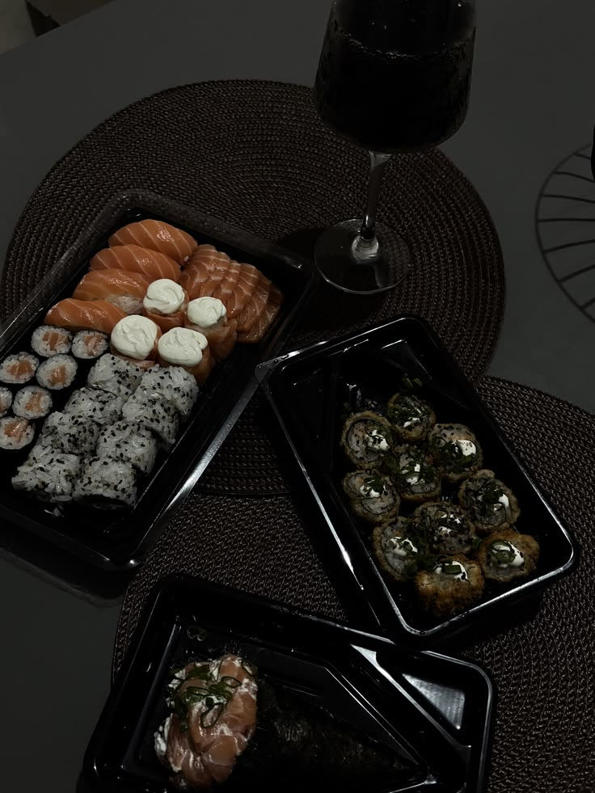
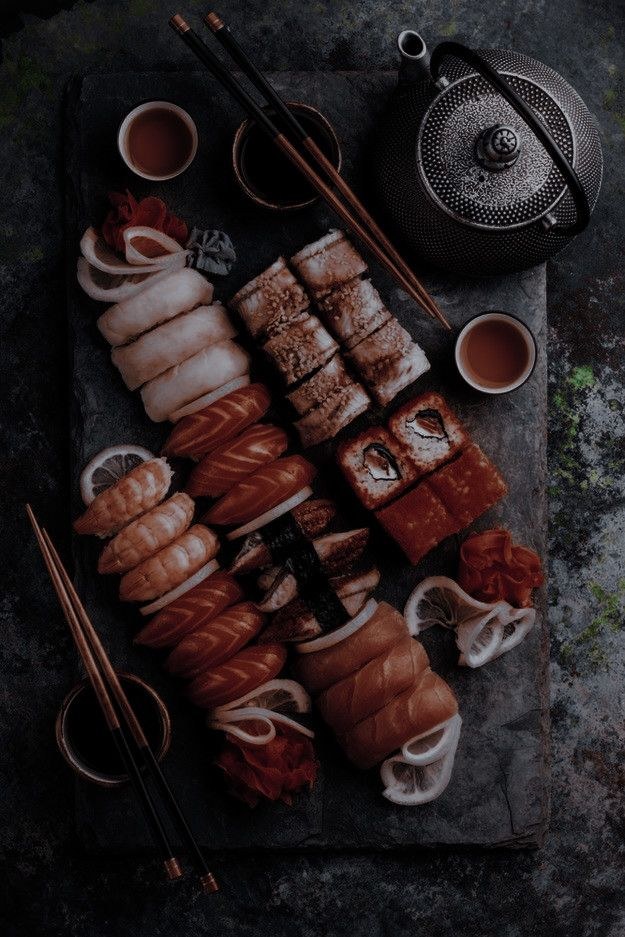
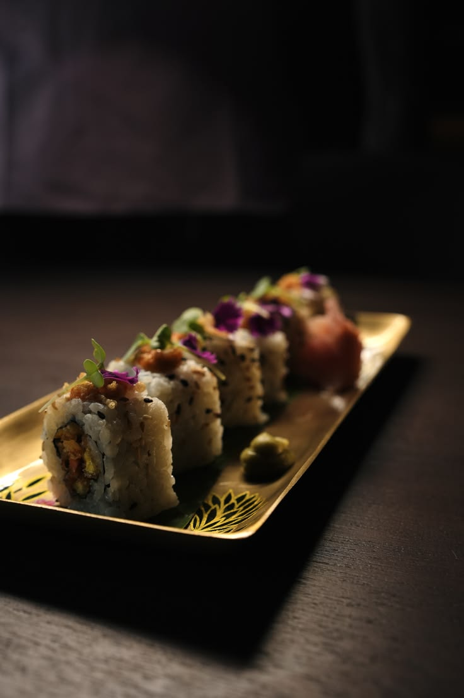

01
Niguiris
Fatias generosas de salmão sobre arroz temperado. Simples, do jeito que tem que ser.
Delivery · Barra Velha - SC
Peixe fresco, arroz no ponto e peças montadas uma a uma. Do nosso balcão para a sua casa, todas as noites.

Cardápio
Uma prévia do que sai da nossa cozinha. O cardápio completo, com preços e combos do dia, está no WhatsApp e no Instagram.

Fatias generosas de salmão sobre arroz temperado. Simples, do jeito que tem que ser.

Salmão selado no maçarico, cobertura cremosa e um toque de cebolinha.

Empanados e crocantes por fora, com molho tarê e gergelim por cima.

Tábuas variadas para dividir — uramaki, hossomaki, niguiri e sashimi.

Delivery
Cada combo é montado na hora e embalado com cuidado para chegar inteiro, fresco e no ponto. Você pede, a gente prepara e entrega em Itajuba e região.
Galeria


Avaliações
Nota 4,4 com 95 avaliações no Google.
★★★★★
“Peças bem montadas, peixe de ótima qualidade e arroz na medida certa.”
Avaliação no Google
★★★★★
“Atendimento sempre gente boa, entrega rápida e tudo embalado direitinho.”
Avaliação no Google
★★★★★
“Que sushi sensacional! A qualidade é indiscutível, preço muito bom também.”
João Pedro H. P. · Google
Onde estamos
R. Cirino Cabral, 429 — Itajuba
Barra Velha - SC, 88390-000
| Segunda a sábado | 18:00 – 23:30 |
| Domingo | 18:00 – 23:00 |